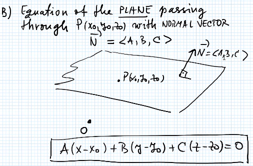
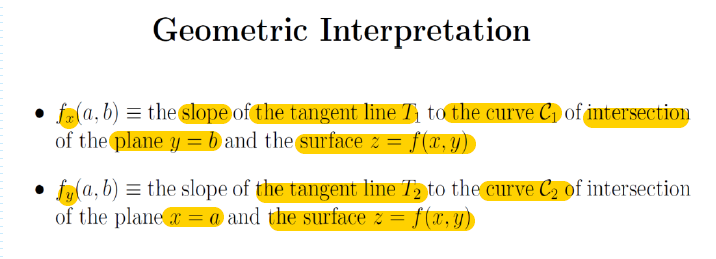
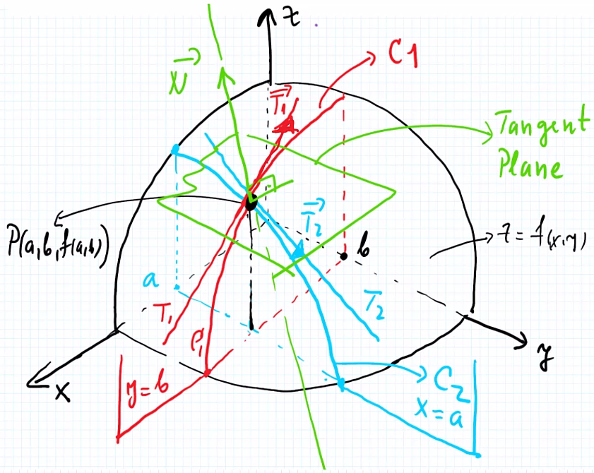
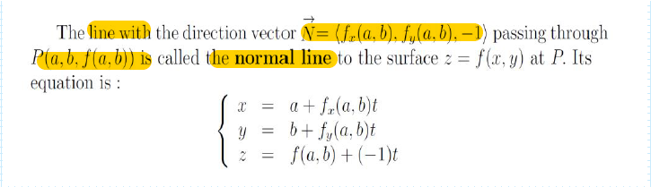
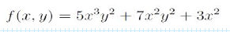

Lecture 3
Partial Derivatives. Tangent Plane
Recall: Concept from 100 and 102
- Definition of Derivaitves

Plane and Normal Vector
- There is only one plane that passes the point P and normal to the Normal Vector 
Vector Equation

- vector is direction vector

- There is only one plane that pass through point P and process the Normal Vector
Definition of Partial Derivatives. Tangent Plane


Geomertric Interpertation
slope of tangent line (y is fixed, derviative of f with respect to x) at point on curve (equivalent to or ?)
curve intersection of vertical plane with normal vector (0, 1, 0) and the surface
- vertical plane parallel to xz plane, cut surface with the vertical plane along curve
- curve is in the vertical plane and on the surface
Simiarly, the above applied to that indicates the slope of tangent line (x is fixed, derivative of f with respect to y). The intersection of vertical plane and the surface produce curve
Tangent line will have direction vector
Direction vectors of two tangent lines and of two curve can span a plane, which is tangent plane
- the tangent plane touches the surface at only point P
Normal vector of tangent plane is normal the direction vectors of two tangent line and
- normal vector with point P can produces a normal line that crosses the tangent plane (normal to the tangent plane)
- normal vector is direction vector of normal line 
- normal vector with point P can produces a normal line that crosses the tangent plane (normal to the tangent plane)

Eqautions of and

- requires:
- point (a, b, f(a, b))x-a=ty-b=t$$ (Recall line equation with direction vector - MATH 102)
Normal Vector N and Tangent Plane

Normal Line

High Order Partial Derivatives

Examples

Solution:

Clairaut's Theorm